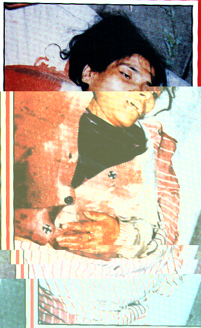

That's human rights violation? <G>
<blabber> Who would rape that chick?
Fuck you idiots like that, we are not fucking joking here, this is what is happening in Kashmir, thousands of women get
raped and thousands of children get
I'm not to sure, UN do some thing. KILLED. We are out their to create 'global' awareness about the Kashmir issue.
THIS IS A FUCKING PROTEST ON THE MASSACRE, 86 PEOPLE KILLED TODAY IN KASHMIR
HERE IS THE NEWS!
Here's the news!
New Delhi begins talks with Hizb nominee: 30 killed in Kashmir Monitoring Desk KARACHI, Aug 1: The process of talks between New Delhi and the Hizbul Mujahideen was set in motion on Tuesday as Indian home ministry officials contacted the outfit's nominee for negotiations here. Fazal Haq Qureshi, a veteran freedom struggle leader heading the Jammu and Kashmir People's Political Front, nominated as the negotiator by Hizbul Mujahideen, confirmed that officials of the home ministry spoke to him on phone on Tuesday morning. However, Qureshi refused to divulge details of his interaction with the officials but said: "I told them that I am available for anybody," according to a PTI report monitored here. He said he was waiting for "guidelines" from the Hizbul Mujahideen to go ahead with the talks with New Delhi. Qureshi said he had been in touch with the Hizbul Mujahideen prior to its announcement of unilateral ceasefire for three months. "I am in touch with the Hizbul Mujahideen as before. Even before they (Hizb) announced the ceasefire, I was in contact with them". APPEAL: The Hizbul Mujahideen appealed on Tuesday to other groups to lay down their weapons and urged Indian forces to suspend operations in occupied Kashmir, says an AFP report from Srinagar. In its statement, the Hizbul Mujahideen said: "We appeal to other groups to support the ceasefire and we expect the Indian troops to suspend their offensive operations against all the groups." The statement said authorities had been asked to contact a leader, Fazal-Haq Qureshi. BREAKTHROUGH: The sudden and unprecedented truce between India and the Hizbul Mujahideen has kindled a flicker of hope for peace in occupied Kashmir. Some believe the developments that have unfolded so rapidly in recent weeks could culminate in a meeting between Chief Executive Gen Pervez Musharraf and Indian Prime Minister Atal Behari Vajpayee at the UN Assembly next month. That would indeed be a breakthrough given that since last year's undeclared war in Kargil, New Delhi has refused to hold talks with Islamabad. But analysts say such hope could easily be snuffed out by New Delhi's reluctance to include Islamabad in negotiations on Kashmir, and its unwillingness to make concessions on sovereignty. There could also be an escalation of violence as diehard groups - such as Lashkar-i-Taiba and Jaish-i-Mohammad - try to undermine the unilateral ceasefire implemented by the Hizbul Mujahideen last week. The first evidence came quickly, with the Lashkar-i-Taiba launching a fierce attack on an Indian army camp in occupied Kashmir on Sunday night. CURFEW: Meanwhile, an indefinite curfew was imposed on Tuesday in a district of occupied Kashmir after the killing of 23 people, including five Hindu pilgrims at a crowded marketplace, a police official said. The official said a group of unidentified gunmen swooped on a market in Pahalgam, 97kms south of Srinagar, and fired indiscriminately at shoppers. "The Pahalgam market which was targeted lies on the Hindu pilgrimage route to the holy Amarnath cave in southern Kashmir. That is why the dead and the injured are mainly from the Hindu community," said the official. "This incident could spark off a lot of communal violence. That is why we have cordoned off the area and stepped up security." A team, led by a senior police officer, rushed to the spot as people from the Hindu community thronged the streets shouting anti-Muslim and anti-government slogans outside police stations, hospitals and government buildings. The district administration imposed an indefinite curfew with police and paramilitary soldiers fanning out across the area after a mob indulged in heavy stone-pelting, damaging government property. "The police have acted promptly and resorted to baton charges and firing to scare away the mobs," the official said. The situation was "calm", he said, but admitted to an "undercurrent of tension" in the southern district where Pahalgam is located. In a separate incident, Indian soldiers shot dead a freedom fighter after he threw two grenades at a government registration office in occupied Jammu, police said. "Police challenged four suspicious-looking men lurking around a government registration office. One of them threw two grenades in the direction of the office when the police shot him dead," said a police official. "Three of the rebels then dashed off in the direction of a crowded nearby residential colony in Jammu called Gujjar Nagar. The police were unable to apprehend them despite firing several rounds," the official said. A number of Hindu pilgrims were standing outside the government office waiting to get their travel permits at the time of the incident. Police say the Hindu pilgrims may have been a possible target. Police added that two freedom fighters were also killed on Tuesday in an encounter with the Indian army in a forest near Pahalgam.-AFP
Previous Work (
Arhived here)
Members, sniper, instinct, rave, heataz, miller, rsnake Greets to mOs, etC!, PHC, #darknet, #flem, #delusion XPERiENCE crew, Attrition.org, Projectgamma.com, hackernews.com, Tr1be Crew packetstorm.securify.org, self-evident.com, hack.co.za rest of #!GFORCE and Freedom fighters of Kashmir (the mujhaideens) oh and #lecole oh andLinuxsex@Undernet, and safemode.org, mad shouts to all freedom fighter in Kashmir and whom ever we've missed .hexa laboratories In5., MAN|AC, Peacemaker, msgmen0t, aekpani, , daces, cen, RR, symetrix, waiter, root66, sysop, apathy13, antipent, BigPopopa, PoWerPr0, bo-k-rra, core, bs, live, none(leviatan), cruciphux (we gotit rightthis time ;)?), SugarKing espionage, defcon, melt, slader, lyp0x, xessor, max0r, wrLiner, DA^BOMB, all peeps at flem .and who ever we've missed |
Admin: sorry, nothing harmed, just logs deleted.
All suggestions and friendly comments welcome
g-force@nightmail.com
Copyright © 2000 by GFORCE All rights reserved. ;)